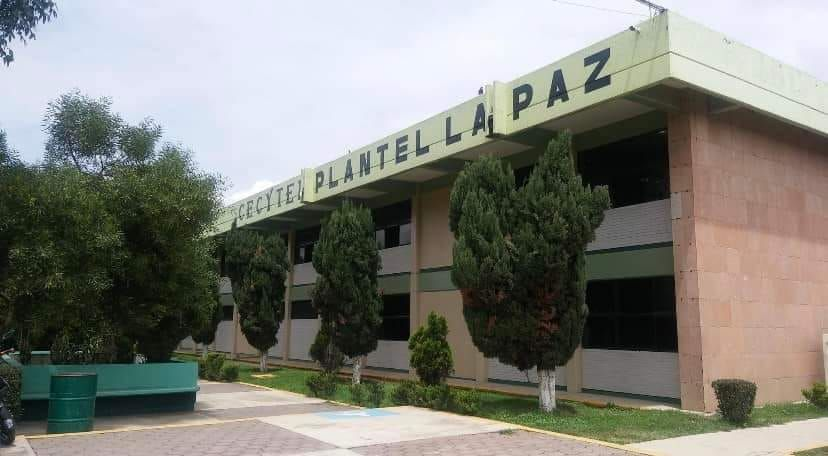

¡Prepárate hoy para transformar tu futuro!
Somos una institución educativa comprometida con la formación tecnológica y académica de nuestros estudiantes.
Promovemos el desarrollo de habilidades, la creatividad, el trabajo en equipo y el uso responsable de la tecnología para preparar a los estudiantes para el futuro.

Conoce las carreras que ofrece nuestro plantel.
Durante tu formación puedes desarrollar diferentes habilidades mediante actividades escolares y proyectos.
La tecnología permite desarrollar proyectos, resolver problemas y adquirir conocimientos útiles para continuar estudiando y prepararse para el mundo laboral.
Consulta los medios oficiales del plantel para conocer información sobre las carreras, las inscripciones y las oportunidades educativas disponibles.
También puedes aprender a crear páginas web con estos recursos: